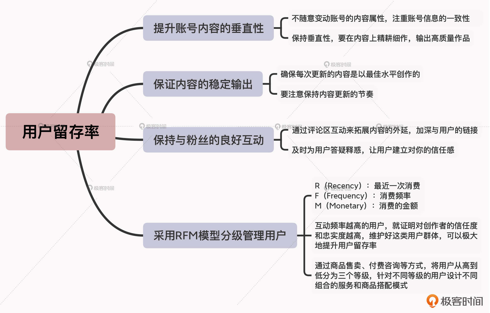

- 00 开篇词 短视频时代下，怎么把握好变现风口？.md.html
- 01 爆款短视频的底层逻辑：用心拍的短视频为啥没人看？.md.html
- 02 爆款短视频的底层逻辑：如何轻松打造自我特色？.md.html
- 03 精益创业法：如何快速跨过从0到1这道坎？.md.html
- 04 SWOT法：这么明显的个人优势你为啥就是看不到？.md.html
- 05 效用函数法：如何用量化的方式进行高效创作？.md.html
- 06 二次创新实验法：如何打造个人的差异化定位？.md.html
- 07 平台定位：如何选择最适合自己的创作平台？.md.html
- 08 如何快速找到各大短视频平台的正确切入点？.md.html
- 09 选题（上）：如何利用思考清单找到合适选题？.md.html
- 10 选题（下）：如何为不同的内容定制合适选题？.md.html
- 11 优劣分析法：如何快速筛选适合创作的视频素材？.md.html
- 12 标题（上）：如何利用微创新巧妙找到爆款标题？.md.html
- 13 标题（下）：如何用对号入座的方式抓住标题亮点？.md.html
- 14 视频封面（上）：如何快速抓住用户注意力？.md.html
- 15 视频封面（下）：如何传递最有价值的信息？.md.html
- 16 视频剪辑：如何轻松掌握视频化剪辑的三大公式？.md.html
- 17 效果反馈法：剪辑很容易，为什么你却一直学不会？.md.html
- 18 剪辑对比（上）：如何避开常见的短视频剪辑陷阱？.md.html
- 19 剪辑对比（下）：如何利用剪辑技巧提升视频质量？.md.html
- 20 拉片法：用电影创作的方式学习爆款短视频运营技巧.md.html
- 21 用户留存率：为什么粉丝很多但忠实拥趸却很少？.md.html
- 22 点赞率（上）：如何有效提升短视频的点赞量？.md.html
- 23 点赞率（下）：三种方法轻松提升用户对内容的认可度.md.html
- 24 上瘾机制：为什么视频观看量很高却没人留言？.md.html
- 25 避坑指南：为什么很多短视频账号中途做不下去了？.md.html
- 26 如何找到适合自己的短视频变现模式？.md.html
- 27 多元化变现：如何明确不同创作阶段的变现任务？.md.html
- 28 多内容变现：不同内容的主打变现模式是什么？.md.html
- 结束语 一切成大事者，都是终身学习者.md.html
- 捐赠
21 用户留存率：为什么粉丝很多但忠实拥趸却很少？
你好，我是周维。
我们知道，短视频内容的本质就是要为用户提供价值。只有这样，作为内容消费者的用户才会喜欢我们创作的内容，也才会长久地留在我们的流量池当中。所以，做好用户留存，是我们在短视频运营中不可忽视的重点。
在我看来，提高用户留存率的价值主要表现为两个方面：第一，可以实现粉丝量的快速增长；第二，能够不断扩大忠实用户池，从而提升账号和个人IP的商业价值。
但问题是：要怎么做才能真正提高用户留存率呢？现在你可以先想想，你在做运营时，是否也面临过以下这几种状况：
- 某个作品上了热门，播放量很大，但是关注自己的用户却不多；
- 因为自己是业余时间做短视频的，更新节奏不太固定，视频播放量忽高忽低，在很长时间里粉丝数也都寥寥无几；
- 创作短视频有一段时间了，单看账号粉丝量的话其实不少，可是对比同类内容属性但粉丝量比自己低的账号会发现，二者在视频的播放量上是差不多的，而且在留言、评论、转发等数据维度上，自己作品的表现都不太好看。
其实在我看来，要提升用户留存率，主要的难点就在于如何通过创作的内容来延长用户在自己账号内的停留时长，培养用户观看自己内容的习惯，从而使得用户与内容、用户与账号产生链接，成为自己的忠实拥趸。
所以这节课，我就来给你分享可以有效提升用户留存率的四大步骤，下面我们就具体来看看。
提升账号内容的垂直性
第一个步骤，就是要提升个人账号内容的垂直性。
现如今，我们能看到很多的短视频平台都一直在说“要垂直、要深耕”，那什么才算是垂直呢？
所谓的垂直就是指从账号定位、内容打造的角度来细分方向，包括细分用户的需求、细分内容的差异化，从而更加精准地定位目标用户人群，并通过具备差异化和深度的内容来凸显自身在短视频内容创作上的优势。
我们要知道，在短视频发展如此迅猛的趋势下，其内容生态发展越来越完善，用户也从最开始打发闲暇时间的娱乐需求，逐渐增加了更多的细分和垂直的需求。比如说，很多用户观看短视频是由于自身的学习兴趣驱使，以及技能提升和职业发展的需要，其观看短视频的注意力更多地转向了补充知识、学习技能的层面。
因此站在用户的角度，当一个账号能够持续稳定地输出自己需要的内容时，就会与该账号产生粘性，随着时间的推移用户还会产生一种品牌意识，在遇到问题或有需求的时候会第一时间来这里寻找答案，这样留存率自然也就提高了。而站在内容创作者的角度，只有保持账号内容的垂直性，释放更大的内容价值，才能减少用户选择内容的成本，也才能更好地留住用户。
那么具体应该怎么做呢？我们可以从两个方面入手。
1. 不随意变动账号的内容属性，注重账号信息的一致性。
不管在哪个内容领域进行创作，一旦确定之后就不要随意变动，比如你确定要创作美食方面的短视频内容之后，就不要再涉足美妆或者旅游之类的内容领域了，这样更有利于后续的精耕细作和稳定输出。
另外在确定了内容领域后，你还要注意将账户名称、头像、简介等信息统一更换成与内容领域相关的内容，这也是增强账号垂直性的一种方式。
2. 保持垂直性，要在内容上精耕细作，输出高质量作品。
简单来说，就是要注重内容创作上的专业度和深度。比如与同领域的创作者相比，即使做的都是同样的选题，也要能体现出自己的专业性，不能浅尝辄止、简单应付，而是要为用户提供更多的价值收获。
我给你举个例子，抖音上的优质美食内容创作者“一家三口美食”，会根据用户的需求每期内容中提供一道菜的简单做法，并且会考虑食材的选择及营养健康的搭配，目的就是拓展用户的知识面，通过挖掘内容中的深度、广度等，带给用户更多的收获。
保证内容的稳定输出
除了保持账号内容的垂直性之外，保证内容的稳定输出也是非常重要的一环。
一方面，要认真对待每次的内容创作，确保每次更新的内容都是以最佳水平进行创作的。毕竟态度决定高度，只有用心的创作，才能吸引用户、赢得用户的喜爱。
另一方面，要注意保持内容更新的节奏。比如说，你承诺用户每周一次更新，那后面就一定要按照这个更新节奏进行，否则就会因为断更导致自己账号的权重降低，也会造成用户的流失。
我举个例子。一位生活类的短视频创作者平时会记录自己打渔的点点滴滴，有一次他创作了如何正确撒网的视频，看得出来在创作上非常用心，不仅从多个角度拍摄了撒渔网的注意事项，还刻意追求撒网展现的美观，而且封面上还放了一张漂亮的撒网动作图片，让人瞬间就有点开观看的欲望。
但是，从这位创作者主页上会发现，他对外输出内容的稳定性很差，有的内容只是随便展示了一下河边的景色，有的展示的就是用鱼篓装鱼的场景，可以说是想到什么就拍什么，没有创作计划，而且更新节奏也非常不固定。所以，由于无法保持稳定的内容输出，虽然他的账号点赞量超过了100多万，但是真正关注的人却不到10万。
可见，保持稳定的内容输出，我们需要从IP打造、自身定位的角度去考虑，千万不要指望自己一个作品成为了爆款，其他的创作内容就无所谓了，否则越是如此，就越无法吸引更多的用户关注，账号的商业价值就越会大打折扣。
保持与粉丝的良好互动
好，我们再来看看提高用户留存率的第三个步骤：保持与粉丝的良好互动。
保持与粉丝的良好互动，有利于内容质量的提升，因为从用户的角度来看内容，往往很多时候都能发现创作者自己看不到的问题。而当用户愿意为你的内容提出建议，就证明用户与你的账号建立了链接，你就可以将这样的用户转化为自己的忠实用户，从而为打造IP带来的正向的反馈。
那么，我们想要与粉丝保持良好的互动，具体该怎么做呢？我认为主要有两点。
首先，通过评论区互动来拓展内容的外延，加深与用户的链接。
当发布了一期视频之后，会有很多用户围绕内容进行评论，表达自己的观点。那么站在内容运营者的角度，我们可以优先处理这些针对内容的评论，也就是通过互动来拓展内容的外延。
比如说，有些用户会针对视频内容做一些补充的科普，我们可以对此进行回复、点赞等，拉近与用户之间的距离，加深与用户的链接；同时用户的评论也会被顶上来，这在无形中也为视频内容做了一定的延伸解读，进一步扩充了其他用户的知识量。
其次，及时为用户答疑释惑，让用户建立对你的信任感。
我们要知道，每个人的认知水平都不一样。即使在创作者看来，自己讲述的内容已经十分浅显易懂，但一定还会有用户产生各种各样的疑问，并且希望创作者能予以解答。
所以，每一次发布视频后，我们可以有针对性回复一些具体的问题，这样不仅可以帮助用户找到答案，还可以在互动中通过答疑让用户对你产生良好的信任感。
另外在答疑时，我们也可以有自己的语言风格，比如风趣、幽默或者严谨等，回复用户虽然不是发口水话，但也不必一板一眼地回答问题。要知道，往往有“神回复”效果的评论内容，会更吸引用户的关注。
但是作为创作者，我们一定不要在评论区与用户发生争吵或者互相诋毁。很多的用户其实都会通过创作者的言行来观察TA的行事风格，或者观察创作者的言行举止与TA的人设有无相悖的情况，从而决定自己要不要去关注或要不要继续去关注创作者。
而且对于这种“黑粉”行为，我们其实也没必要特别在意，他们的存在对于创作者来说未必是件坏事，因为黑粉可以激发更多信赖创作者的忠实用户与之“斗争”，从而也会加深创作者与用户之间的链接。
采用RFM模型分级管理用户
提高用户留存率的最后一个步骤，是采用RFM模型去分级管理账号内的用户，这样可以让用户更加喜爱自己的内容。这里你可能要问，什么是RFM模型？如何分级管理用户？
RFM模型是互联网运营人员经常使用的一种工具，其中，R（Recency）是指最近一次消费，F（Frequency）是消费频率，M（Monetary）是消费的金额。
在短视频领域中，当创作者的短视频账号具备了一定量的粉丝数之后（一般几百粉丝即可）就可以开通小店，售卖一些商品。所以这里所使用的RFM模型，就是根据用户的购买、打赏等动作，制作一个统计图表，定时统计更新前面所说的三个维度的数据，以此来判定其与创作者之间的互动频率。
互动频率越高的用户，就证明对创作者的信任度和忠实度越高，维护好这类用户群体，就可以极大地提升用户留存率。
所以，当我们通过RFM模型梳理出付费用户后，就可以将其引流到私域流量的社群当中，通过商品售卖、付费咨询等方式，将用户从高到低分为三个等级。
然后，针对不同等级的用户，我们可以设计不同组合的服务和商品搭配模式，等级越高的用户收获得越多，以此可以区分用户的粘性。
小结
要提升用户留存率，最重要的就是要延长用户在自己账号内的停留时长。围绕这个维度，我们可以从今天所讲的四个步骤进行着手打造，分别是：提升账号内容的垂直性、保证内容的稳定输出、保持与粉丝的良好互动，以及采用RFM模式来分级管理用户。
随着短视频平台发展的垂直与多元化，作为创作者要有意识地培养自己的忠实粉丝。因为变现能力的强弱与忠实用户池的大小有直接关联，而今天所讲的四个步骤，对于扩展忠实用户池的帮助非常大，你可以重点关注下。

思考题
如果你是一个普通的短视频用户，你之所以会关注一个短视频创作者，成为对方的忠实粉丝的原因是什么呢？欢迎在留言区分享你的答案，我也想听听你的想法。
如果你觉得有收获，也欢迎把今天的内容分享给更多的朋友。感谢你的阅读，我们下节课再见。
© 2019 - 2023 Liangliang Lee. Powered by gin and hexo-theme-book.